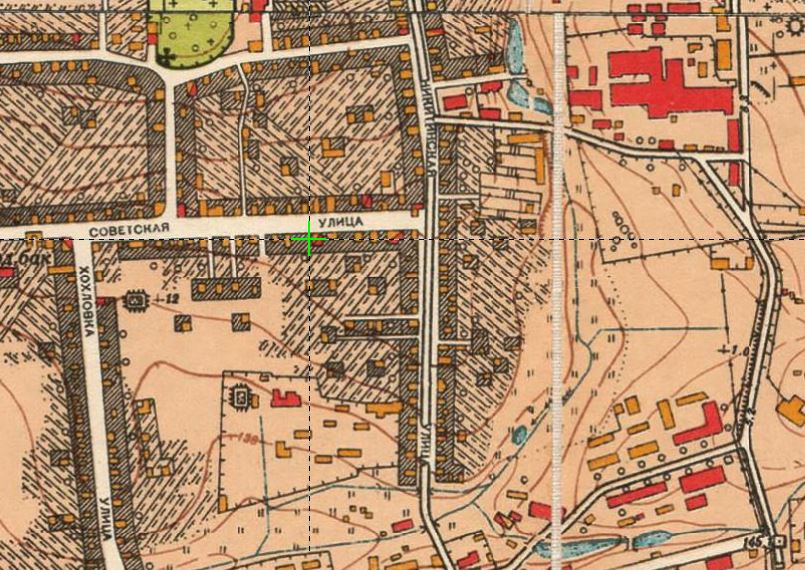

Начало 50-х годов прошлого века…
В окружении улиц Никитинская, Советская и Хохловка стоят деревянные деревенские дома, основном, принадлежавших рабочим фабрик «Меховая» и «Измайловская мануфактура».
Это уже Москва, но еще деревня.